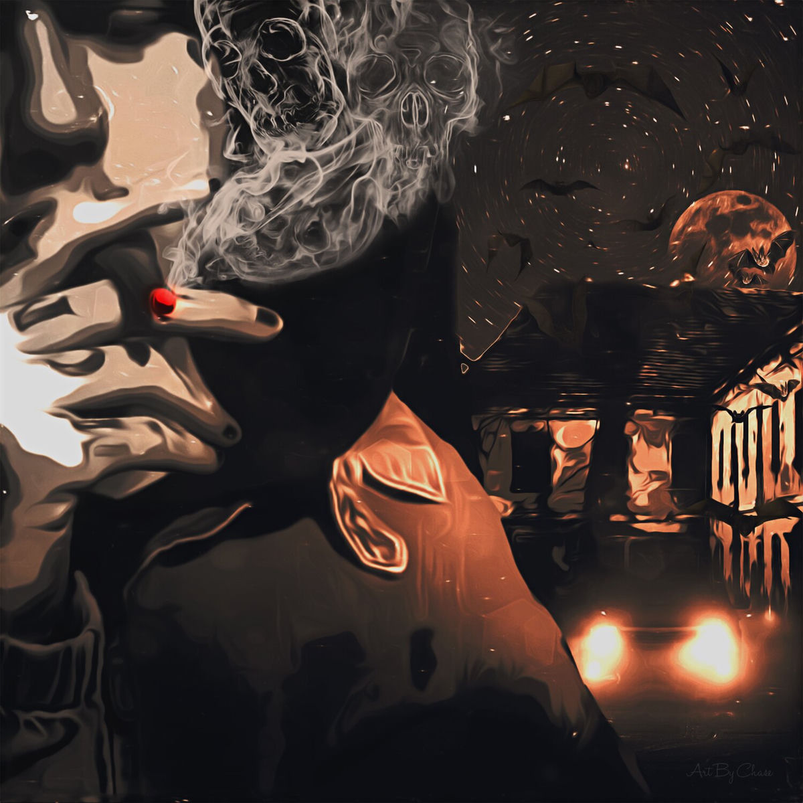
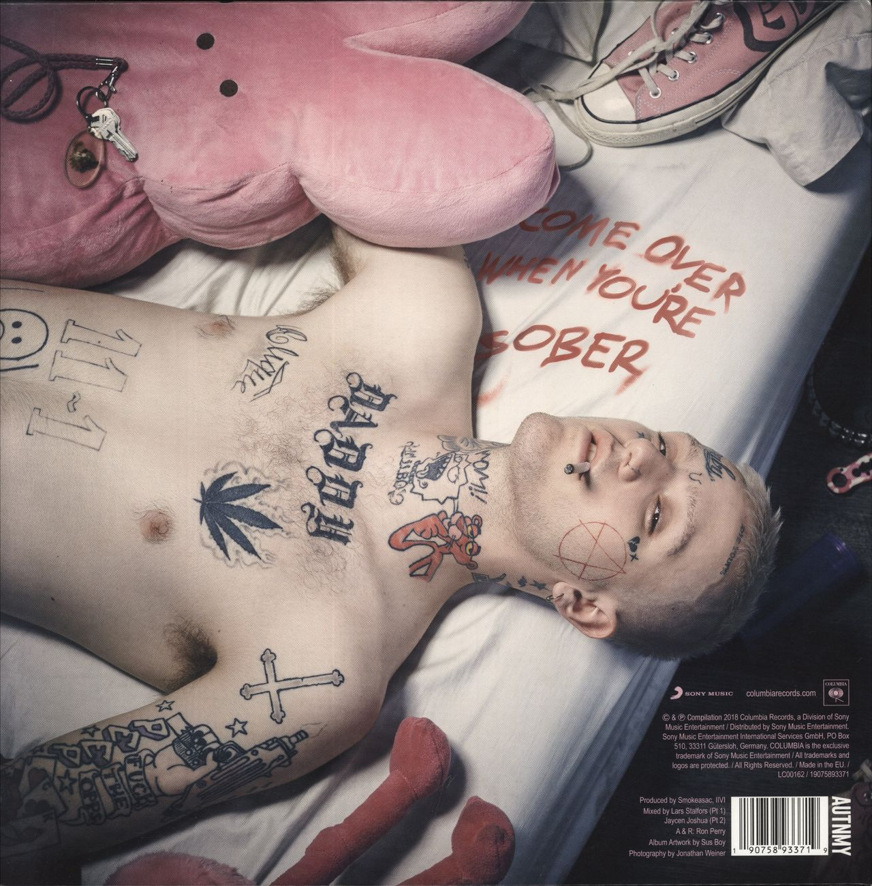

Discographie
Lil Peep a commencé à publier sa musique en 2015 sur SoundCloud, une plateforme où des artistes indépendants partagent leurs morceaux gratuitement. Très vite, son style unique attire des millions d'écoutes : il mélange des rythmes de rap avec des guitares et des paroles inspirées de l'emo et du rock.
En seulement quelques années, il sort plusieurs mixtapes, puis son premier album studio en 2017. Après sa mort, ses proches ont publié ses morceaux inédits, pour que sa musique continue de vivre.

Live Forever
2015
Crybaby
2016
Hellboy
2016

Come Over When You're Sober, Pt. 1
2017
Come Over When You're Sober, Pt. 2
2018
Everybody's Everything
2019
Ses titres les plus connus aujourd'hui
Encore aujourd'hui, ses morceaux les plus écoutés sont Nuts (avec Rainy Bear) et Save That Shit. Des années après leur sortie, ils continuent de faire découvrir Lil Peep à une nouvelle génération, notamment grâce à TikTok.